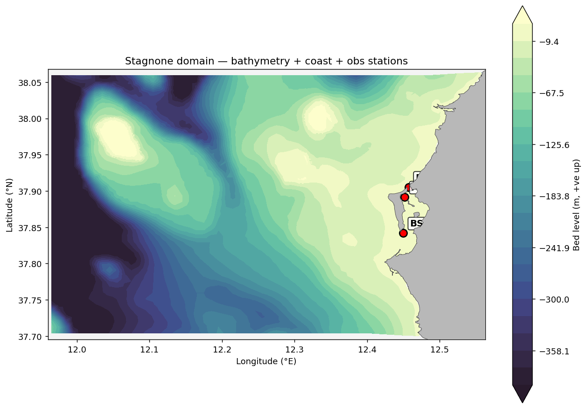
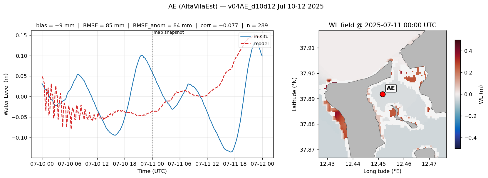
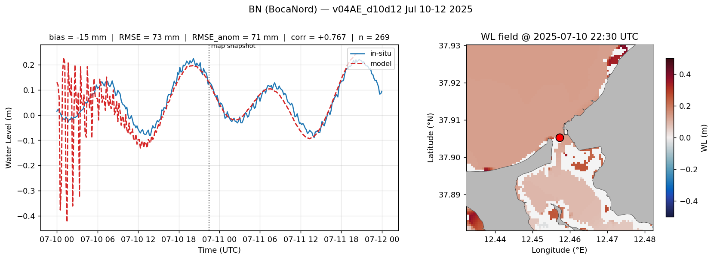
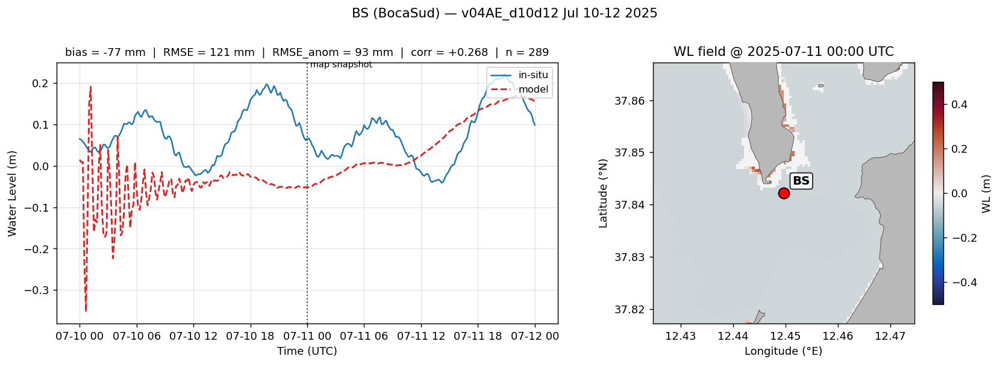

Hydrodynamic Model — Stagnone di Marsala
3D coupled D-Flow FM + SWAN digital twin · 9-day baseline + 2-day continuation
Spatial Fields · Full Domain (MP4)
Water Level (s1)
cmocean.balance, ±0.5 m. Dry cells masked via mesh2d_waterdepth.
Significant Wave Height (Hrms)
cmocean.amp, SWAN coupled output (com.nc → FM).
Salinity (top layer)
cmocean.haline, 37–46 ppt range. Intertidal blowup capped by saliMax=80.
Domain Overview

Bathymetry (cmocean.deep_r) with filled LDB land overlay + 3 obs stations
(AE: AltaVilaEst, BN: BocaNord, BS: BocaSud). Mesh extent ~37.70-38.06 °N, 11.97-12.56 °E.
Per-Station Validation · Water Level vs In-Situ
AE — Synchronized time series + spatial map
Vertical-line marker on the time-series follows the frame of the spatial map.
Click the slider to seek. Use scroll-wheel on the heatmap to zoom in/out.
Validation Metrics Table
| Station | n | bias (mm) | RMSE (mm) | RMSE_anom (mm) | σ model (mm) | σ obs (mm) | corr @ lag 0 |
|---|---|---|---|---|---|---|---|
| Loading validation_metrics.json… | |||||||
Note: WL phase shift of ~3h identified at interior stations (best
correlation at lag ≈ −3h for AE, ≈ −1h for BS). Listed corr @ lag 0 is
therefore lower than physical skill. Investigation pending — likely caused
by the uxuyadvectionvelocitybnd workaround (zero boundary current → no
bottom-drag damping). See memory v04AE_d10d12_first_continuation_run.
Per-Station Static Snapshots
AE

BN

BS
